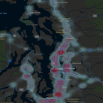

Overview
The Puget Sound Traffic Citations Map visualizes the distribution of traffic violations across Seattle and the broader Puget Sound region. It uses point-based citation data symbolized as a heat map to highlight locations with higher concentrations of traffic violations.
Data Source
- CitationLocations Feature Class from the SeattleCitations geodatabase.
- Data provided by the Washington State Traffic Council.
- Attributes include violation type, county, and milepost location.
Puget Sound Traffic Violations Map
- The I-5 corridor between Everett and Olympia shows the highest density of traffic violations.
- King County has the largest number of citations compared to surrounding counties.
- Heat map visualization emphasizes urban corridors and high-volume travel areas as hotspots.
{kind=link}
Interpretation
The map provides actionable insights for traffic analysts and policymakers to identify enforcement hotspots and prioritize road safety interventions. High violation densities along I-5 suggest a combination of heavy traffic flow and concentrated enforcement activity.
Methods
- Data Preparation
- Imported citation data into ArcGIS Pro.
-
Cleaned the attribute table by removing null values and unnecessary fields.
-
Visualization
- Applied Heat Map symbology to the citation layer.
-
Adjusted transparency for contextual visibility of basemap features.
-
Exploration and Analysis
- Identified areas of dense violations along major roadways.
- Generated bar charts to compare violations by county.
Tools Used for Seattle Traffic Citations Map
| Tool/Component | Purpose |
|---|---|
| ArcGIS Pro 3.5 | Main GIS platform for visualization and spatial analysis. |
| ArcGIS Notebook | Used to write and run Python code for data handling and visualization. |
| arcpy (Python library) | Accessed feature classes, cleaned data, and generated charts. |
| Heat Map Symbology | Visualized citation density across Seattle and the Puget Sound region. |
| Layer Transparency | Enhanced visibility of the basemap beneath the heat map. |
| Bar Chart Visualization | Compared traffic violations by county to identify highest totals. |